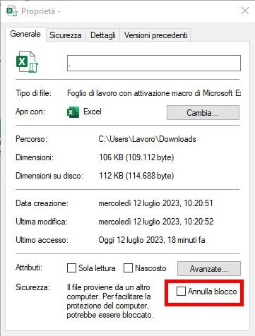
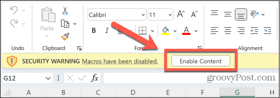
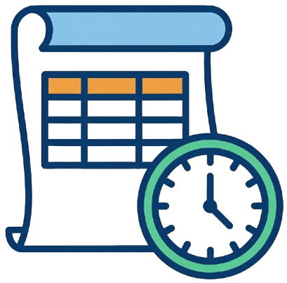

Benvenuto
Il file Timbrature UPO è uno strumento automatizzato progettato per semplificare la gestione mensile dell'orario lavorativo.
Ti permette di registrare entrate e uscite ottenendo in tempo reale il calcolo di flessibilità, buoni pasto e residuo ferie, in conformità con le normative dell'Ateneo.
In questa guida troverai tutte le istruzioni per configurare il file e risolvere eventuali dubbi comuni.
Argomenti consigliati
-
Abilitare le macro al primo avvio
-
Capire il foglio Riepilogo
-
Codici per Ferie e Permessi (F, M, Fest)
-
Come gestire i ritardi (MOPER)
Installazione e primo utilizzo
Il file utilizza automazioni avanzate (VBA). Per questo motivo, Windows e Excel potrebbero richiedere un'autorizzazione di sicurezza al primo avvio.
1. Sblocco del file (Windows)
Prima di aprire il file per la prima volta:
- Tasto destro sul file scaricato > Proprietà.
- In basso a destra, spunta la casella "Annulla blocco" e premi OK.

2. Abilitazione contenuto (Excel)
All'apertura del file, noterai una barra gialla sotto il menu.
- Clicca sul pulsante Abilita contenuto per attivare i calcoli automatici.

Riepilogo e Dashboard
Il cuore del sistema è il foglio Riepilogo, che agisce come centro di controllo per tutto l'anno lavorativo.
Foglio Riepilogo
Da qui puoi creare i nuovi mesi, cancellarli o archiviare l'anno. Accedi tramite la linguetta in basso o il menu:
 Pulsante Riepilogo:
Clicca una volta per andare al Riepilogo. Clicca di nuovo per tornare al mese su cui stavi lavorando (funzione "Torna indietro").
Dashboard Grafica
Per una visione d'insieme dell'andamento annuale (Ferie godute, Saldo ore, etc.):
 Pulsante Dashboard:
Pulsante Dashboard:
Apre i grafici a schermo intero. La Dashboard si chiude automaticamente se cambi foglio o se riclicchi sul pulsante.
Utilizzo Quotidiano
Il file è progettato per richiedere il minimo sforzo. Devi inserire solo:
- Orario di Entrata (es.
08:05)
- Orario di Uscita (es.
14:00)
Il calcolo di FLEP (Esubero), FLEN (Debito) e Buoni Pasto (dopo 6h 12m) è immediato.
Gestione Ritardi (MOPER)
La fascia di flessibilità è 08:00 - 09:00. Se timbri dopo le 09:00, il sistema segnerà il ritardo in rosso e lo conteggerà automaticamente nella colonna MOPER (Motivi Personali).
Legenda Codici
Per giustificativi, usa questi codici nella colonna "Entrata":
| Codice | Significato |
|---|
| F | Ferie |
| Fest | Festività |
| P18H | Permesso orario |
| M | Malattia |
| R | Recupero ore |